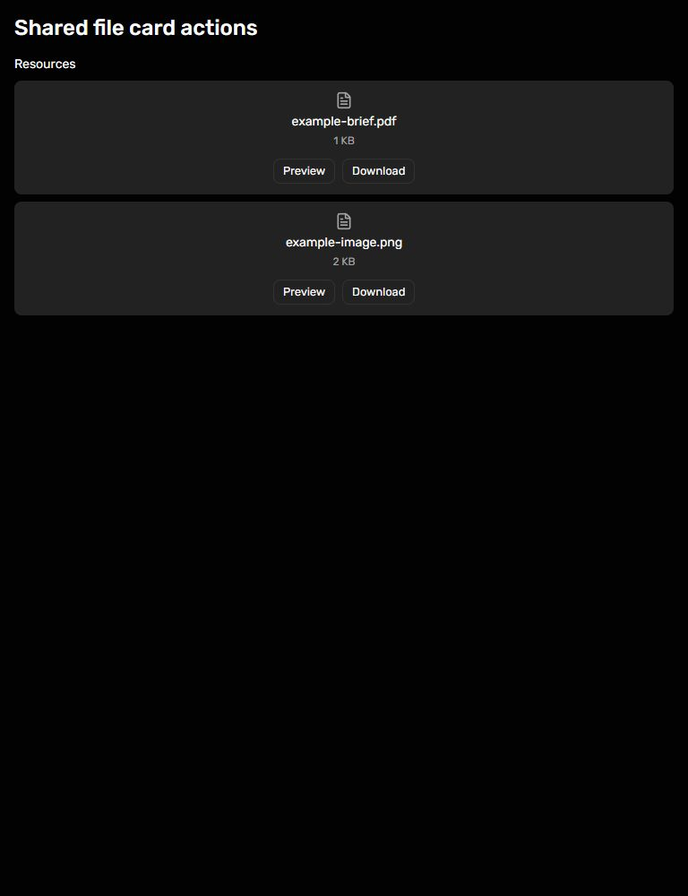

Read-only FileUploadField - unpublished 0.7.0 candidate
Verified 14 October 2026: shared npm run check passed (18 unit tests and 32 Chromium consumer browser cases); Lecturer lint and TypeScript/build passed. Browser checks at 375, 768 and 1440px retained file cards and Preview/Download controls with no horizontal overflow. Keyboard Preview activation passed. Lecturer read-only border/padding measured 0px/0px; editable remained 1px/16px. Only Lecturer local installed candidate was refreshed; released pins remain 0.6.2. No API restart or publication. Lecturer aggregate verification remains on hold.
 375px
375px
768px 1440px
1440px